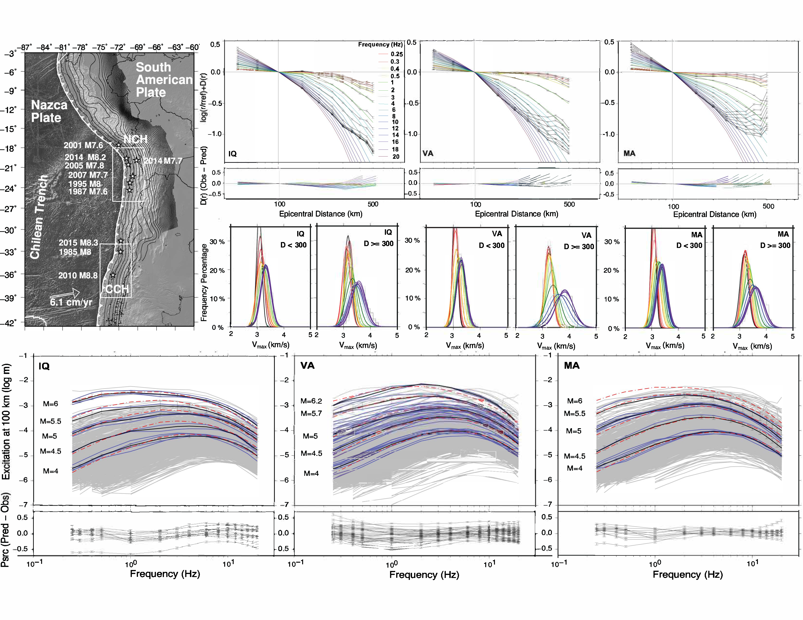

The world's most active subduction margin
The Peru–Chile trench runs 6,000 km along the eastern Pacific, where the Nazca Plate subducts beneath South America at roughly 7.6 cm per year. It has produced the largest earthquake ever recorded, the 1960 Mw 9.5 Valdivia event, and generates a megathrust rupture of Mw 8+ approximately every decade. But the margin is not uniform. Structural heterogeneity, thermal gradients, and fluid conditions vary strongly along strike, and these variations produce measurable differences in how seismic waves propagate and attenuate from one segment to the next.
This study focuses on two recent major ruptures that together sample contrasting crustal environments: the 2014 Mw 8.2 Iquique earthquake in northern Chile (NCH, 18°–25°S) and the 2010 Mw 8.8 Maule earthquake in central Chile (CCH, 33°–38.5°S). Their aftershock sequences collectively provided more than 10,000 weak motion records, a dataset dense enough to map attenuation structure at scales and frequency ranges impossible to reach with the sparse strong-motion database from large events alone.
Three sub-regions are defined within this framework. The Iquique (IQ) dataset samples NCH, recorded by 35 permanent IPOC network stations. The Valparaíso (VA) and Maule (MA) datasets both sample CCH, recorded by different subsets of the 138 temporary IMAD broadband sensors deployed after the 2010 Maule earthquake. The overlap between VA and MA, different stations recording the same crustal segment, serves as a built-in consistency check on the regional attenuation signal.
Reading attenuation from the recorded ground motion
The analysis uses a stochastic point-source framework that decomposes observed ground motion amplitude into three separable contributions: a distance-dependent attenuation term D(r), an event-specific source excitation term, and a station site term (Boore 2003). Crucially, both the time-domain signal, peak ground velocity (PGV) filtered at narrow frequency bands, and the frequency-domain signal, root-mean-square Fourier velocity spectra (FVS), are analyzed in parallel, providing redundant constraints on the same underlying physics.
The forward model expresses amplitude as a product of source spectrum, geometric spreading g(r), frequency-dependent anelastic attenuation Q(f), and a near-surface high-frequency decay term κ₀. An iterative damped least-squares regression recovers the empirical D(r) and source excitations simultaneously, without assuming the shape of either. The reference distance is fixed at 100 km to minimize extrapolation effects.
Why weak motion, not just strong motion?
Strong-motion databases from large earthquakes are sparse: a magnitude 8 event in Chile might add a few dozen usable records. Aftershock sequences add thousands of moderate events that densely sample the propagation medium at distances, azimuths, and frequency ranges the strong-motion database never reaches. At low to moderate ground motion levels, site response is linear, so site amplification can be cleanly separated from path effects. And critically, moderate events have corner frequencies in the 5–15 Hz range, providing clear spectral separation between source and path that large events, with corner frequencies below 1 Hz, cannot offer. The trade-off is that magnitude scaling must ultimately be anchored to strong-motion data for engineering applications. This study provides the path and site parameterization; strong-motion databases provide the magnitude scaling.
Two crusts, two attenuation regimes, one figure tells the story
The composite figure below integrates the core results across all three sub-regions. Read it in three layers, from top to bottom: the tectonic context and dataset geometry; the forward-modeled distance attenuation and its physical interpretation through phase velocities; and the source excitation spectra that encode how energy is generated at the source and how it is modified by the path.

Top: The Chilean margin with the NCH and CCH study boxes and major megathrust ruptures since 1970. Forward-modeled distance attenuation functions D(r) for IQ, VA, and MA, colored by frequency (0.25–20 Hz), with residuals below. CCH paths (VA, MA) decay faster than NCH (IQ), particularly at low frequencies. Distributions of Vmax, the apparent velocity of the S-wave peak amplitude, split by distance (<300 km and ≥300 km). At short distances, Vmax clusters tightly near 3.5 km/s (Lg-dominated crustal propagation). Beyond 300 km, high-frequency Vmax shifts toward 4 km/s, signaling the growing contribution of mantle phases (Sn) that the point-source model cannot capture. Bottom: Source excitation spectra at 100 km for IQ, VA, and MA across magnitude bins M4–M6. Gray curves are individual events; blue are those with known Mw; black is the observed mean; dashed red is the forward model. CCH shows larger intermediate-frequency excitation (0.5–5 Hz) across all magnitudes; residuals (Pred − Obs) are near zero across the full frequency range (Aziz Zanjani & Herrmann 2026, in revision).
The 300 km boundary: when the model meets its limit
The Vmax distributions (middle panels) reveal a physical limit of the point-source stochastic approach. Below 300 km, peak amplitudes travel at ~3.5 km/s, consistent with Lg, the dominant crustal surface wave in regional propagation. Beyond 300 km, particularly at high frequencies, Vmax shifts toward 4 km/s, the velocity of Sn mantle phases. A single-exponent geometric spreading model cannot account for this transition, producing systematic residuals at large distances and high frequencies. This is not a failure of the model; it is physically interpretable evidence that crustal and mantle phases must be separated explicitly in any broadband stochastic approach applied beyond ~250 km.
The point-source model works where crustal S waves dominate. Where mantle phases enter the wavefield, a more sophisticated multi-phase approach is required. The Vmax distributions show exactly where that transition happens.
— A constraint on stochastic ground motion modeling under the assumption of S-wave propagationSource excitations and the two-corner frequency model
The source excitation panels (bottom row) show that the standard single-corner Brune model fails to fit the low-frequency spectral content for larger events, it systematically underpredicts energy below ~1 Hz at M5–6. A two-corner frequency source model (Atkinson & Silva, 2000) resolves this, providing substantially better fits across the full bandwidth. The estimated κ₀ values, 0.035 s for IQ and VA, 0.04 s for MA, are spatially consistent and within the expected range for subduction zone settings, confirming that near-surface high-frequency attenuation does not vary significantly between NCH and CCH at shallow depths.
Northern Chile attenuates less, and the reasons are geological
The key result is unambiguous: CCH systematically attenuates seismic energy faster than NCH, with quality factors Q₀ of 380 (IQ), 320 (VA), and 400 (MA), and frequency dependence η of 0.35 for IQ and VA, 0.30 for MA. The difference is most pronounced at frequencies below 4 Hz, where energy dissipation mechanisms are most sensitive to temperature and fluid content.
Northern Chile — Iquique (NCH)
Q₀ = 380, η = 0.35. Cold, arid forearc underlain by old, rigid lithosphere with low fluid content. The Salar de Atacama block has elevated Qp values and high electrical resistivity, consistent with a poorly hydrated crust. Seismic energy propagates efficiently, flatter D(r) curves, less energy loss per unit distance. Higher intermediate-frequency excitation for large events reflects this efficient transmission.
Central Chile — Valparaíso & Maule (CCH)
Q₀ = 320–400, η = 0.30–0.35. Normally dipping slab promotes a hot mantle wedge and active volcanism as shallow as ~20 km. The Liquiñe–Ofqui Fault System creates permeable pathways for deep hydrothermal fluids, saturating the upper crust. Higher attenuation is consistent with partially molten material and elevated Vp/Vs ratios documented in body-wave tomography. D(r) curves decay steeply, particularly at low frequencies.
This contrast is not an artifact of the methodology. The similar attenuation between the VA and MA datasets, collected from entirely different station sets within CCH, confirms the signal is a robust regional feature. The pattern aligns independently with non-ergodic ground motion modeling by Macedo and Liu (2022), which derived spatially varying anelastic attenuation coefficients from strong-motion data using a cell-specific Bayesian approach. Converting their cell coefficients to effective Q values at 5 Hz yields ~2,500 for NCH versus ~840 for CCH, a threefold contrast in the same direction as our results, though different in absolute magnitude because their dataset integrates over deeper, colder forearc lithosphere not sampled by our shallow (<40 km) dataset.
From weak motion to hazard: what the attenuation contrast means
For seismic hazard assessment, the documented attenuation contrast between NCH and CCH has implications that cut in two directions. First, the median ground motion predictions themselves are affected: for coastal sites in CCH at distances of 100–200 km from a megathrust rupture, the faster attenuation means somewhat lower median shaking than the same source would produce in NCH at equivalent distances. More importantly for modern probabilistic hazard analysis, the contrast is a systematic, spatially correlated effect that traditional ergodic ground motion models incorrectly treat as aleatory (irreducible) variability.
Non-ergodic models, by explicitly partitioning this kind of systematic path effect into the epistemic uncertainty budget, can reduce total standard deviation substantially. Macedo and Liu (2022) demonstrated that non-ergodic modeling for Chile reduces the aleatory standard deviation from ~0.85 to ~0.67 for PGA, a 15–25% reduction in 84th-percentile hazard estimates at well-instrumented sites. The weak-motion Q(f) models developed here provide physically grounded, frequency-explicit parameterization that can directly inform the cell-specific attenuation terms in that non-ergodic framework, extending its frequency range and validating its spatial patterns from an independent dataset and methodology.
More broadly, the approach demonstrates that crustal properties measurable from moderate earthquakes, anelastic attenuation Q(f), geometric spreading g(r), linear site amplification, scale reliably to larger events. This matters especially for regions that have not yet experienced a recorded megathrust rupture: the aftershock sequences of neighboring events can constrain the regional path and site structure in advance of the next large earthquake.